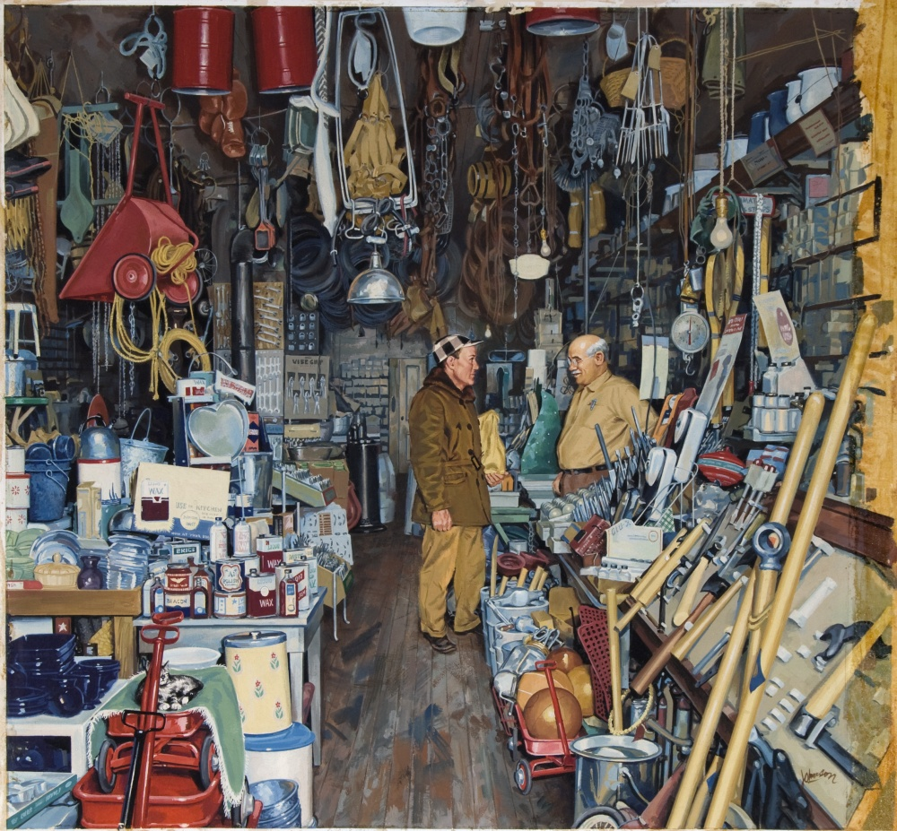

SQL project aimed at analyzing customer behavior and providing insights to stakeholders for business growth in a Music Store. This involved examining a dataset encompassing artists, albums, and sales, and utilizing SQL queries to identify top-selling artist albums and understand customer behavior pattern,also conducted data quality checks to ensure data accuracy and completeness.


The central focus of this analysis was to acquire insightful observations pertaining to the attrition patterns within the organization. The primary purpose was to foster a profound comprehension of employee turnover and its inherent drivers through the application of data visualization methodologies to scrutinize attrition data and discern significant trends. The ultimate objective was to support the organization in making well-informed decisions and implementing strategic initiatives to effectively address the issue of attrition.

The fundamental purpose underlying the analysis was to utilize Python programming and diverse libraries to undertake an extensive exploration of Diwali sales data. The overarching aim encompassed enhancing the customer experience and fostering sales expansion through the extraction of insightful revelations from the dataset. By discerning patterns, correlations, and customer preferences, the analysis sought to optimize sales strategies and facilitate data-informed decision-making processes, thus promoting the achievement of desired outcomes.

This project aimed to analyze the sales data of Vrinda Store in 2022, with the objective of providing insights to drive sales growth in 2023. The data underwent thorough cleaning to rectify errors and resolve duplicate column names. Additional data processing involved the creation of a month column and the categorization of age groups. Leveraging Python libraries like Matplotlib and Seaborn, the data was analyzed to extract valuable insights for guiding strategic sales initiatives in the upcoming year.

AtliQ Hardware, a prominent supplier of computer hardware and peripherals in India, is encountering challenges related to business insights and a decline in overall performance. In order to address these issues, the company seeks to gain a comprehensive understanding of sales patterns, particularly in regions with minimal activity, as well as identify the least popular products. By leveraging these insights, strategic decisions can be made to drive improvements and foster growth within the organization.